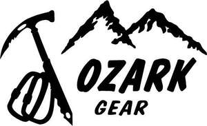

Trade Mark Journal No.2026/008 20 February 2026
UK00004334566 3 February 2026 (3,8,9,12,28,35)

- Class 3
- Toiletry preparations; Cleaning preparations; Polishing preparations; Grinding preparations; Cosmetics; Mouthwashes, not for medical purposes; Incense; Deodorants for human beings or for animals; Air fragrancing preparations; Perfumes.
- Class 8
- Abrading instruments [hand instruments]; Hand tools, hand-operated; Mountaineering ice hammers; Mountaineering pickels [ice axes]; Scissors; Knives; Graving tools [hand tools]; Table cutlery [knives, forks and spoons]; Handles for hand-operated hand tools; Knife handles.
- Class 9
- Data processing apparatus; Downloadable mobile applications; Computer software platforms, recorded or downloadable; Smartwatches; Smartglasses; Signs, luminous; Radios; Protective goggles; Alarms; Batteries, electric.
- Class 12
- Electric vehicles; Bicycles; Snowmobiles; Sleighs [vehicles]; Snow-going vehicles; Telpher railways [cable cars]; Vehicles for locomotion by land, air, water or rail; Safety belts for vehicle seats; Vehicle seats; Anti-theft alarms for vehicles.
- Class 28
- Apparatus for games; Fairground ride apparatus; Toys; Balls for games; Body-building apparatus; Machines for physical exercises; Knee guards for sports; Snowshoes; Swimming pools [play articles]; Sporting articles.
- Class 35
- Advertising; Presentation of goods on communication media, for retail purposes; Marketing; Sales promotion for others; Import-export agency services; Provision of an online marketplace for buyers and sellers of goods and services; Personnel management consultancy; Book-keeping; Sponsorship search; Rental of sales stands.
OZARK (Shanghai) Industrial Co., Ltd.
Representative: UK HAOCO CO., LIMITED